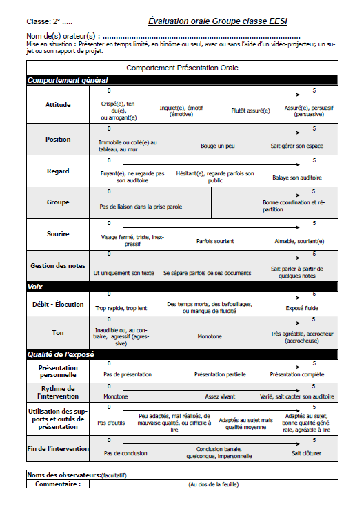

Exemple de critères pouvant être observés
 |
La majeure partie du temps c'est à l'aide de fiche de ce type que nous suivons un oral . Celle-ci grâce à des critères observables nous permet rapidement d'évaluer votre présentation. Bien sûr il en existe d'autres. Mais ... si vous tenez déjà compte de ceux qui sont mentionnés sur celle-ci, je vous avoue que je ne fais aucun souci pour vous ! |
Créé avec HelpNDoc Personal Edition: Environnement de création d'aide complet